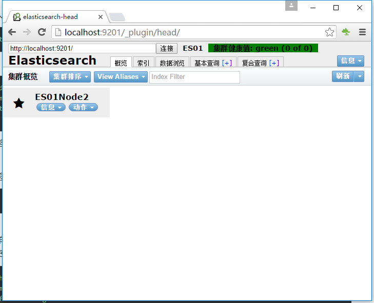
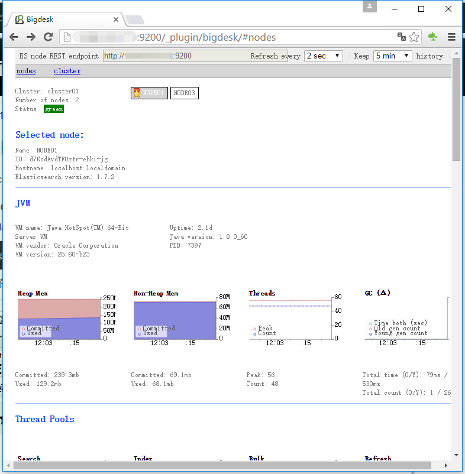
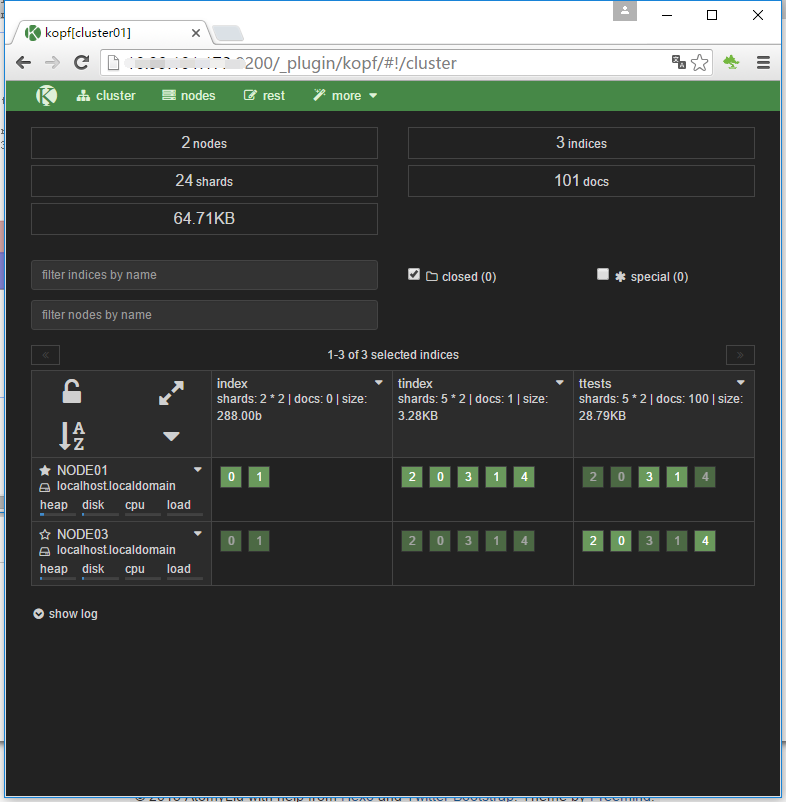
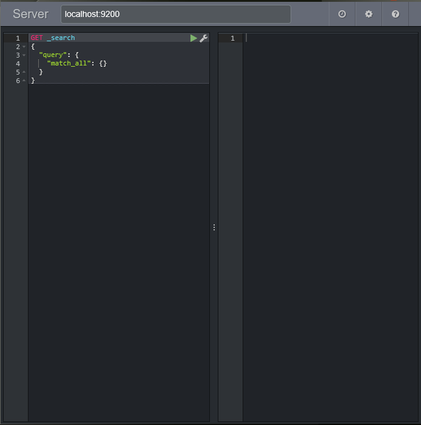

elasticsearch 插件安装
Elasticsearch可扩展性很强，插件也相当完善，下面介绍几个常用插件的安装和使用。
elasticsearch-head 插件
首先进入 /elasticsearch/bin 目录，使用命令行：1
./plugin -install mobz/elasticsearch-head
安装完成后在 /elasticsearch/plugins目录下看到head的文件夹
在浏览器中输入http://localhost:9200/_plugin/head/可看到：

bigdesk 插件
安装命令：1
./plugin -install lukas-vlcek/bigdesk
安装完成后在 /elasticsearch/plugins目录下看到bigdesk的文件夹
在浏览器中输入http://localhost:9200/_plugin/bigdesk/可看到：

kopf 插件
1 | ./plugin -install lmenezes/elasticsearch-kopf |
安装完成后在 /elasticsearch/plugins目录下看到kopf的文件夹
在浏览器中输入http://localhost:9200/_plugin/kopf/可看到：

除了这些属于UI类别的插件外，还有其他许多功能上的插件
比如中文分词插件：elasticsearch-analysis-ik
比如拼音分词插件：elasticsearch-analysis-pinyin
可以同步数据的river插件等。
在一款叫marvel的插件中，包含了一个名为sense的编辑器，可以方便的进行DSL的编写， 以后的内容中，我们将以sense的形式展现DSL代码内容。
